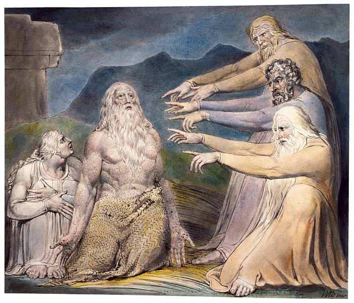
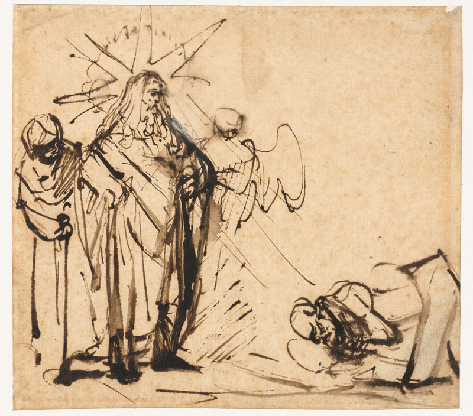
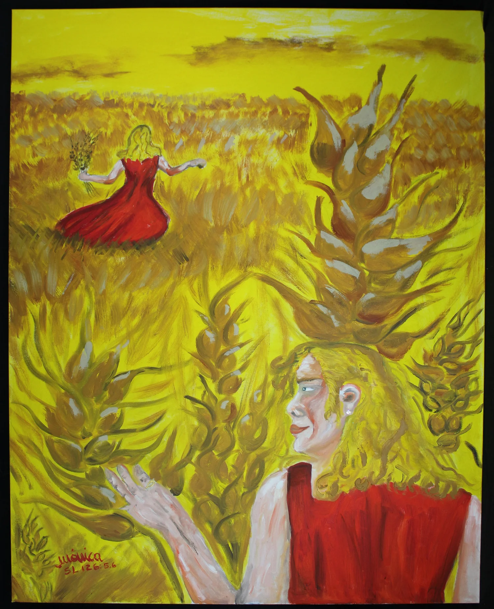
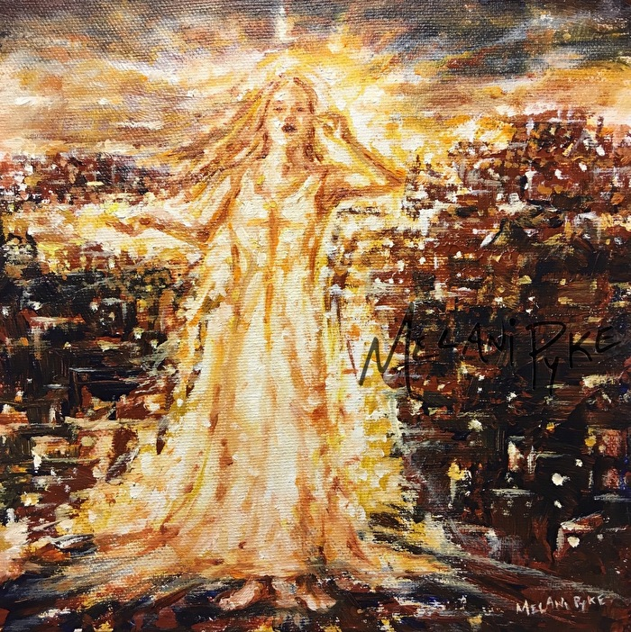

God's Humor
as told by friends of His
Testimony
Text
Testimony
Text
Genesis
17:17
/
18:12-15
/
21:6
/ Job
5:22
/
8:21
/
12:4
/ Psalm
2:4
/
37:13
/
59:8
/
126:2
/ Proverbs
1:26
/
14:13
/
29:9
/
31:25
/ Ecclesiastes
2:2
/
3:4
/
7:3-6
/
10:19
/ Habakkuk
1:10
/ Matthew
9:24
/ Mark
5:40
/ Luke
6:21
/
6:25
/
8:53
/ James
4:9



